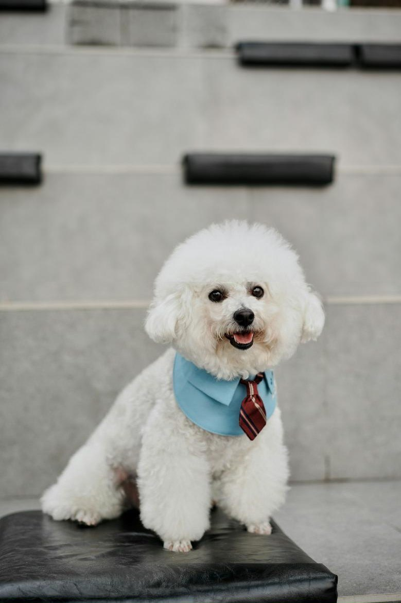
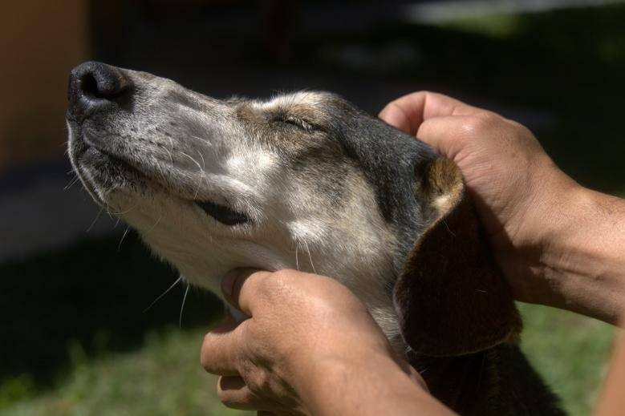
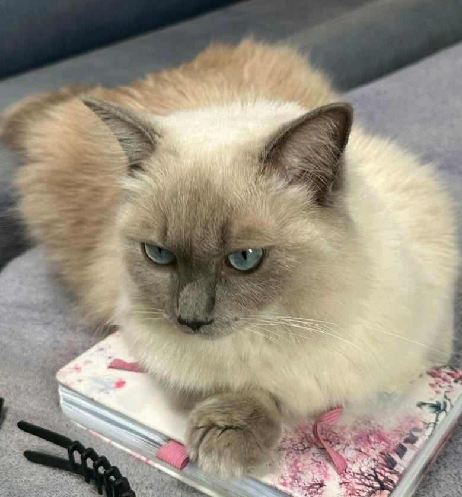
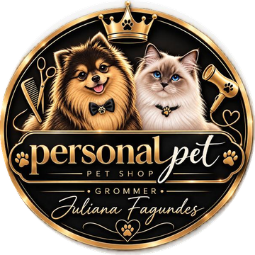

Banho e hidratação
Banho completo com produtos escolhidos para o tipo de pelo, secagem com cuidado e acabamento caprichado.
- Produtos pensados para cada pelagem
- Hidratação para brilho e maciez
- Para cães de todos os portes
Na Personal Pet, o banho e a tosa são pensados para o tipo de pelo, a raça e o jeitinho do seu pet. Quem cuida é a groomer Juliana Fagundes, com 13 anos de experiência com cães.

Todo tutor conhece aquele aperto de deixar o pet num lugar novo. Você quer que ele volte bonito, cheiroso e, principalmente, tranquilo.
Banho e tosa não é linha de produção. Cada pet tem o seu tempo.
Meu pet volta estressado do banho.
A tosa nunca fica com a cara da raça dele.
Não tenho tempo de levar e buscar.
Ele tem a pele sensível e vive se coçando.
O pelo embola e perde o brilho rápido.
Quero alguém que trate ele com paciência.
Por isso o nome. Aqui a gente olha para o pelo, a pele e o comportamento de cada pet antes de começar, e escolhe o banho, os produtos e a tosa que combinam com ele.
Serviços diferenciados e personalizados para cada raça e pelagem.
Conta pra gente a raça, o porte e como anda o pelo do seu pet. A Juliana indica o cuidado certo e já combina o melhor horário.
Banho completo com produtos escolhidos para o tipo de pelo, secagem com cuidado e acabamento caprichado.
A tosa que respeita o padrão da raça ou o estilo que você prefere, feita por quem estudou estética canina.
Para peles sensíveis: produtos hipoalergênicos, com óleo de melaleuca e extrato de camomila, como apoio nos cuidados com a pele.

Sou a groomer e responsável pela Personal Pet, em Cruz Alta. A Personal Pet nasceu como uma nova proposta de pet shop: menos pressa e mais atenção ao que cada pet precisa.
Trabalho há 13 anos com cães. Adestramento, handler, groomer e, agora, Medicina Veterinária: cada passo me ajudou a cuidar melhor de quem não pode dizer o que sente.
Falar com a JulianaConta a raça, o porte e o serviço que procura. Se quiser, manda uma foto do seu pet.
Você traz até a Personal Pet ou usa o serviço de busca e entrega.
Cheiroso, bem cuidado e tranquilo, do jeitinho que você queria.
de trabalho com cães: adestramento, handler e estética canina.
Ver a Personal Pet no FacebookA Personal Pet surgiu como uma nova proposta de pet shop, oferecendo serviços diferenciados e personalizados para cada raça e pelagem.
Seu pet vai e volta com segurança, e você não precisa parar a sua rotina. Consulte os bairros atendidos pelo WhatsApp.

O valor depende do porte, da raça, do tipo e do estado da pelagem. Chama no WhatsApp com a raça e, se puder, uma foto do seu pet, que a gente passa o valor certinho.
Sim, a Personal Pet tem serviço de busca e entrega. Os bairros atendidos e o horário são combinados pelo WhatsApp.
Pode, e para isso existe o banho terapêutico, com produtos hipoalergênicos, óleo de melaleuca e extrato de camomila. Ele ajuda nos cuidados com a pele e complementa, sem substituir, o tratamento indicado pelo médico-veterinário.
Têm, sim. A Juliana trabalha há 13 anos com cães, com experiência em adestramento e handling. Cada pet é atendido no seu tempo.
Em Cruz Alta/RS, na Rua Procópio Gomes, 147, bairro São Miguel. Se preferir, use o serviço de busca e entrega.

Garanta o horário do seu pet e veja a diferença de um banho e tosa feitos sob medida.